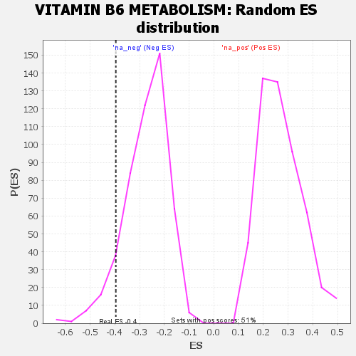

| | | Dataset | GSEA RNK clr Maaslin2 MucosalvsLuminal KO - Ileum.rnk |
| Phenotype | NoPhenotypeAvailable |
| Upregulated in class | na_neg |
| GeneSet | VITAMIN B6 METABOLISM |
| Enrichment Score (ES) | -0.3959704 |
| Normalized Enrichment Score (NES) | -1.4602246 |
| Nominal p-value | 0.071283095 |
| FDR q-value | 0.19976446 |
| FWER p-Value | 0.986 |
Table: GSEA Results Summary
 Fig 1: Enrichment plot: VITAMIN B6 METABOLISM
Fig 1: Enrichment plot: VITAMIN B6 METABOLISM
Profile of the Running ES Score & Positions of GeneSet Members on the Rank Ordered List

Fig 2: VITAMIN B6 METABOLISM: Random ES distribution
Gene set null distribution of ES for VITAMIN B6 METABOLISM